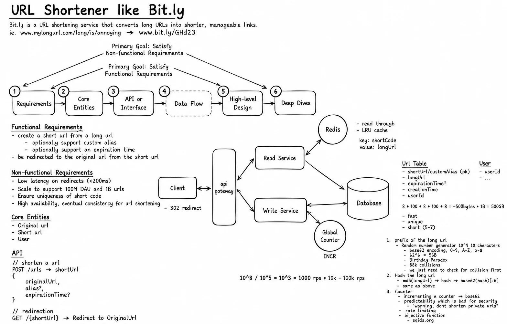
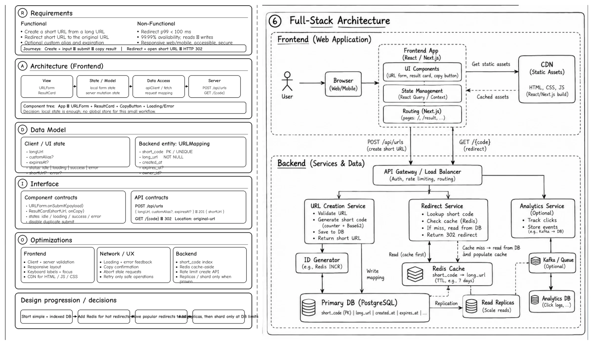

Topic · Scaling Reads: Bitly URL Shortener
Bitly: Requirements, Data, and API
A full-stack URL shortener: create a short URL, redirect it fast. Writes are rare, redirects dominate - optimize the read path without overengineering the write path.




Quick Revision
- Asymmetric workload: creation is rare, redirects dominate.
short_codeas primary key = uniqueness + indexed point lookup; PostgreSQL is a fine start.- Cache-aside redirects; cache TTL never exceeds URL expiry.
- 302 by default to keep expiry, edits, analytics, abuse control.
- Explicit uniqueness: counter/range + Base62, or hash/random +
UNIQUE+ retry. - Redirects bypass the SPA: edge → redirect service → Redis/DB → 302.
- Scale stepwise: index → Redis → CDN/edge → split services → replicas → shard at a proven limit.
Requirements
- Core - submit long URL → short URL (
POST /api/urls); visit short URL → destination (GET /{code}); one destination per active code. - Optional - custom alias (409 on clash), expiry (410 after), async click analytics.
- Non-functional (worked) - redirect p99 < ~100 ms, 99.99%, ~1B mappings, 100M DAU, ~1000:1 reads:writes; availability over fresh analytics; uniqueness is correctness.
- Full-stack - responsive, accessible form; clear states; server validation authoritative; safe retries; stateless scaling; graceful degradation; abuse protection.
| Ask | Answer | Decision |
|---|---|---|
| Multiple short URLs per long URL? | Yes | No global dedupe |
| Editable destination? | Not initially | Immutable → easy caching; add versions later |
| Expiry? | Yes | expires_at; TTL = min(default, time left) |
| Expired vs missing? | Distinguish | 410 vs 404 |
| Alias case? | Lowercase | Normalize; reserved words |
| New link works instantly? | Yes | Commit primary, warm Redis; no replica-only read |
| Short URL secret? | No | Sequential OK; private links need unguessable codes |
| Browser cache redirect? | No | 302 |
| Redis down? | Degrade | Bounded DB fallback, breakers, shedding |
Data model
url_mapping(
short_code VARCHAR(16) PRIMARY KEY,
long_url TEXT NOT NULL,
created_at, expires_at NULL, owner_id NULL,
is_custom_alias BOOL, status DEFAULT 'ACTIVE',
version BIGINT, long_url_hash BYTEA NULL)
INDEX (owner_id, created_at DESC)
INDEX (expires_at) WHERE expires_at IS NOT NULL
cache url:{code} → {longUrl, expiresAt, status, version}, TTL = min(default, expiry - now)
neg not-found:url:{code} → TTL 30-60 s; delete after create
- Entities - URLMapping, optional User, ClickEvent (separate store), IdempotencyRecord.
- Analytics - append-oriented store or warehouse, never the redirect row.
API
POST /api/urls Idempotency-Key: ...
{ "longUrl": "...", "customAlias": "design123", "expiresAt": "..." }
→ 201 { "code": "5K7mZ9", "shortUrl": "https://short.ly/5K7mZ9", ... }
GET /5K7mZ9 → 302 Found, Location: ..., Cache-Control: no-store
GET /api/urls/{code} (optional management)
- Create rules - http/https only, max URL and body size, normalize alias, same response for a repeated idempotency key.
- Statuses - 201, 302 (default), 301 (truly permanent), 400, 404, 409 alias taken, 410 expired, 429 rate-limited, 503 (never a wrong destination).
Frontend (RADIO)
- Requirements - create: input → optional alias/expiry → submit → loading → result → copy/open. Redirect is a server journey, not UI.
- Architecture -
App → URLForm (inputs, SubmitButton, ValidationSummary) → ResultCard (link, CopyButton, ExpiryLabel) → ErrorBanner; local state; SSG/CSR; CDN assets; small bundle. - Data - longUrl, alias, expiry, status, shortUrl, error. Display the response; never invent codes client-side.
- Interface -
URLForm.onSubmit,ResultCard.onCopy; keep the idempotency key on retry; map 409/429/503 clearly. - Optimizations - fingerprinted immutable assets, disable duplicate submit, keep form on error, clipboard fallback,
aria-live, visible labels, render URLs as text.
Interview practice
Answer aloud, then reveal.
Osmos.ai Senior (Oct 2025): URL shortener - edge cases, bottlenecks, optimizations in ~30 min.
Clarify create/redirect, define APIs and mapping, PK lookup + Redis, code generation, 302, hot links, stepwise scaling.
Wingify SSE (Sep 2025) / Microsoft L61 (Mar 2025): design a URL shortener.
Requirements → data/API → read/write flows → cache/DB → unique code strategy → scale and failures → trade-offs.
Postman SDE2 (Jun 2025): implement it; HTTP codes and collisions.
Create/redirect contracts, unique code, 301 vs 302, idempotency, collision retry.
Razorpay Senior (Oct 2024): keep mappings 3-5 years, scalable and available.
Retention/expiry, capacity estimate, indexed durable storage, backups, read cache, cleanup.
Why is short_code the primary key?
It's the redirect lookup key: uniqueness plus an indexed point lookup.
SQL or NoSQL?
Both work; PostgreSQL is a strong default - simple model, unique constraints, modest writes, cache takes reads.
Same long URL → same code?
Only if the product wants global dedupe; multiple codes suit owners, campaigns, expiry, analytics.
How does the frontend retry safely?
Reuse the same idempotency key and keep form state.
Need a global frontend store?
No for one form; add server-state tooling when history/management arrives.
Mid-level vs senior answer?
Mid: one service, indexed DB, Base62 or hash+retry, Redis. Senior: trade-offs, read-after-write, idempotency, range failover, hot keys, cache outage, multi-region, observability, migration.